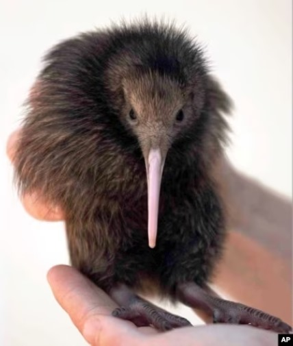
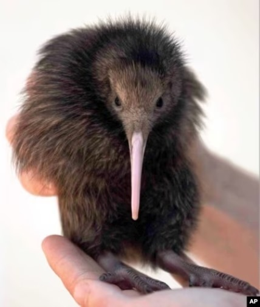

The word "kiwi" often brings to mind the image of something small, brown, fuzzy, and found in the produce section of your local supermarket. But the kiwi is not a fruit—that's kiwifruit, which is native to eastern Asia! About the size of a chicken, the kiwi is a small, flightless, and nearly wingless bird found only in New Zealand.

 

-
HABITAT AND DIET
The kiwi lives in forested areas of New Zealand that tend to be very steep and wet, surrounded by shrubs and trees found nowhere else on Earth. Since it is not able to fly up into trees to nest, rest, or escape from danger, the kiwi makes its home in burrows in the ground of its swampy forest or grassland habitat. The bird digs multiple burrows within its territory, using strong toes and claws. Nest burrows, dug early in the season, become overgrown at the entrance to provide great camouflage by the time the female is ready to lay her eggs.
-
FAMILY LIFE
Kiwi pairs use gentle grunts and snuffles with each other and their chicks, and males purr during mating. Pairs do fight, and the larger female may kick the male away if she is not in the mood for his company. If another kiwi invades a pair’s territory, a kicking fight ensues, and kiwis have been known to fight to the death, although this is rare.
An adult male and female kiwi typically pair for life, but a female may choose a new male if a more desirable one wanders by. The male doesn't have beautiful songs or fancy feathers to attract a female. Instead, he follows one around constantly while grunting. If she's not interested, the female might wander off or try to scare him away. Breeding season is late winter to early summer. Nests might be in hollow logs or in underground burrows dug by the male.
The female kiwi lays up to six eggs every year. Kiwi eggs are smooth and white, off-white, or pale green in color. They are also huge in comparison to the mother: one egg might reach up to 20 percent of her weight; that would be like a 120-pound (54 kilograms) human female giving birth to a 24-pound (11 kilograms) baby! Compared to the relative weights of other birds and their eggs, the female kiwi should weigh about 31 pounds (14 kilograms) rather than its typical weight of 2 to 8 pounds (0.9 to 3.6 kilograms).
Kiwi
Temporal range: Miocene-Recent North Island Brown Kiwi
North Island Brown Kiwi
Scientific Specification
| Domain | : | Eukaryota |
| Kingdom | : | Animalia |
| Phylum | : | Chordata |
| Clade | : | Dinosauria |
| Class | : | Aves |
| Infra class | : | Palaeognathae |
| Clade | : | Novaeratitae |
| Order | : | Apterygiformes |
| Family | : | Apterygidae |
| Genus | : | Apteryx |